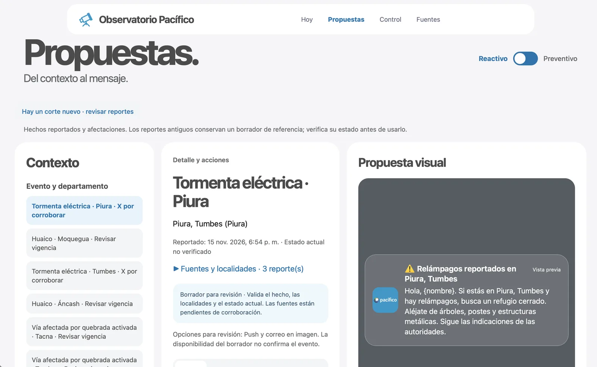
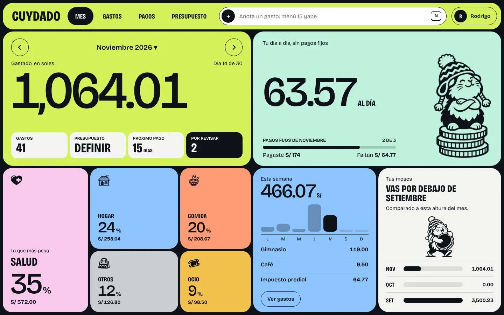
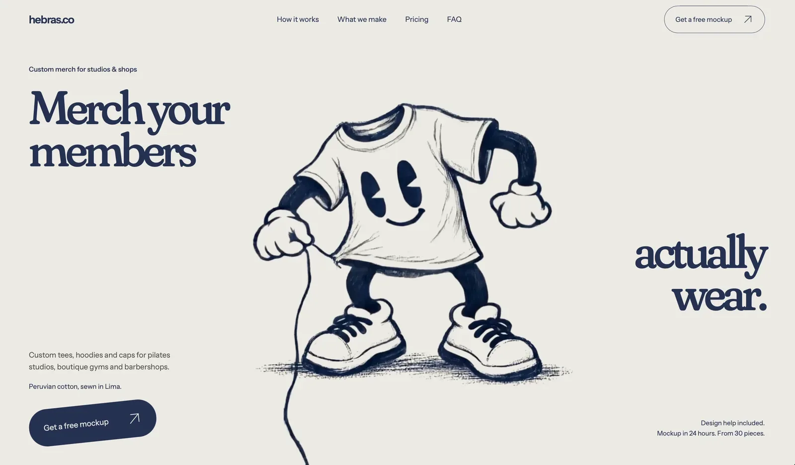

Diseño y construyo herramientas con IA que la gente usa de verdad, en una aseguradora y en mis propios proyectos.
Rodrigo
Montes
Un radar del Fenómeno del Niño que avisa por SMS cuando algo pasa y propone qué decirles a los clientes de la zona.
Observa
torio



Cada equipo buscaba las noticias del Niño por su lado y llegábamos tarde a avisar a los clientes. Ahora la alerta llega sola al celular.
Ver el caso completo
El problema
Avisos oficiales, reportes de emergencia, noticias y publicaciones en X llegaban por canales distintos y sin verificar. Comunicarse con los clientes afectados dependía de que alguien lo viera a tiempo.
Lo que construí
Un monitor que junta todas esas fuentes y marca qué está verificado; un mapa del día con lo reportado y lo previsto; alertas por SMS cuando aparece un evento, y propuestas de push y correo para la zona, listas para revisar.
Resultado
En producción desde fines de octubre de 2026, con entre 8 y 10 alertas enviadas en sus primeras semanas. Las capturas muestran datos públicos; las propuestas usan {nombre} en lugar de datos de clientes.
Un agente en Copilot Studio que responde en Teams cuántos clientes hay en un segmento, canal o producto.
Agente
de datos
Me escribían varias veces al mes para pedirme el mismo tipo de número. Lo convertí en una conversación que no depende de mí.
Ver el caso completo
El problema
Cada consulta de cuantificación tomaba entre 5 y 10 minutos y esperaba a que yo estuviera libre.
Lo que construí
Un agente que responde en lenguaje natural dentro de Teams, conectado a la data de SharePoint. Validé sus respuestas contra el dashboard oficial antes de abrirlo.
Lo que aprendí
El piloto funcionó. Para escalarlo hacía falta conectarlo a Power BI y automatizar los accesos, y eso quedó fuera del alcance. En una empresa grande, el cuello de botella de la IA suele ser el acceso a los datos, no el modelo, y eso hay que diseñarlo desde el inicio.
Una app de gastos que se llena sola: lee los correos de BCP, Yape y Plin y te pide solo la categoría.
Cuy
dado


Me cansé de anotar gastos a mano, así que hice que se anotaran solos. La primera versión se veía hecha con IA; la rediseñé hasta que tuvo personalidad.

Ver el caso completo
La automatización
Un script de Google lee los correos de pago, crea el gasto pendiente y manda una notificación al instante. Una cola "Por revisar" deja confirmar cada pago con un toque.
El rediseño
Partí de referencias propias y descarté varias direcciones hasta llegar a bloques de color encajados, una jerarquía de números clara y un personaje: un cuy con chullo, generado con IA y ajustado a mano, que acompaña cada estado.
Lo que muestra
Lo que importa a diario: cuánto gastas por día sin contar los pagos fijos y en qué se fue el mes. En escritorio, un gasto se anota escribiendo "menú 15 yape". Montos de ejemplo.
Merch hecho en Lima para estudios de pilates, gimnasios boutique y barberías de Estados Unidos.
Hebras



Quería mostrar un catálogo completo antes de producir una sola prenda. Con IA lo armé sin una sesión de fotos.
Carteras de cuero hechas a mano en Lima. Sin carrito de compras: cada pieza se pide por WhatsApp, porque así compra la gente aquí.
Diòses


Cada cartera se conversa: color, interior y plazo. La web responde todo antes de que la clienta escriba.


Seis años entre datos, marketing y experiencia de cliente. Empecé en publicidad y terminé escribiendo SQL. Hoy junto las dos cosas para construir con IA.
- Pacífico Seguros, Business Specialist 2024 – hoy
- Grupo Pana, CX Analyst 2022 – 2024
- Entel Perú, Data Analyst 2022
- Havas Media Group, Data Assistant 2020 – 2022
- PUCP, Publicidad 2022